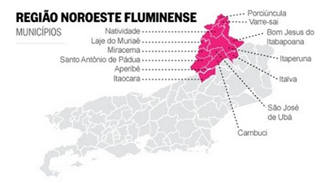
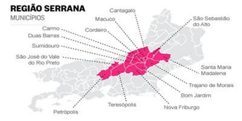

|
A
entrada
do café no Rio de Janeiro iniciou-se na região
da Mata da Tijuca, por volta de 1760. Em 1779 foram
exportadas 57 mil arrobas de café brasileiro.
A economia cafeeira teve sua época áurea
entre 1820 e 1880, quando a região do Vale
do Rio Paraíba fluminense possuía a
maior produção mundial do grão.
Nessa fase, o "ouro verde" expandiu suas
fronteiras apoiado no tripé mão-de-obra
escrava, terras férteis e mercado crescente.
No ano de 1900, o café era responsável
por 15% do PIB e 57% das exportações.
Em meio a esse cenário, foi inaugurado, em
1901, o edifício do Centro, com as finalidades
de sediar a Bolsa do Café e coordenar outras
atividades do setor.
Atualmente, o Rio de Janeiro possui 1.420 propriedades produtoras de café, as quais produziram, na última safra (2015/2016), cerca de 347.400 sacas de café arábica. A geração de empregos é da ordem de 3.500 postos de trabalho diretos, sendo 1.500 permanentes e 2.000 temporários.
O consumo de café no estado do Rio é de 2.689.000 sacas a.a., o que corresponde a 10,28% do consumo interno brasileiro. Destaca-se que o Rio recebe anualmente cerca de 1 milhão de turistas estrangeiros, o que aumenta a responsabilidade do estado de apresentar produtos de alta qualidade, de forma a promover a melhoria da imagem do café brasileiro junto a formadores de opinião.
A
seguir, algumas informações sobre
a cafeicultura no estado do Rio de Janeiro:
Estado:
-
Total
de Propriedades com café: 1.420
-
Total
de covas de café: 44.125.700 (em 2016)
-
Total
de área com café: 13.919 há
(em 2016)
-
Em
Produção: 41.408.857 covas - 13.062
ha
-
Em
Formação: 4.980.000 covas - 1.250
ha
-
Recepa
2002: 926.000 covas - 450 ha
Regiões:
-
Nordeste - cafeicultura mais tradicional
-
Serrana
e Sul - cafeicultura e agricultura, pecuária e ramo empresarial
-
Consumo
de café: aproximadamente 1.6 milhões
de sacas, equivalentes a 10,28% do consumo nacional.
-
75%
dos cafeicultores possuem pequenas propriedades,
com menos de 50 ha de terras.
-
A
área média com café por propriedades
é de 10,7 ha.
-
Cafeicultura
de montanha (fortemente ondulada).
-
Predominância
de arábica.
Produção
em Sacas:
| 2010* |
237.600 |
| 2011* |
247.000 |
| 2012* |
262.200 |
| 2013** |
281.000 |
| 2014*** |
292.300 |
| 2015*** |
300.600 |
| 2016*** |
350.800 |
Fontes:
*Faerj/Sebrae; **Embrapa; ***Conab
Dados sobre as regiões produtoras:
Região
Noroeste:
-
70%
do parque cafeeiro do estado
-
Nº
Covas: 45.815.000
-
Área:
9.163 há
-
Nº
de produtores: 1.150 - 81% do estado
-
Produção
2014: 195.840 sacas
-
Produção
2015: 201.400 sacas
-
Principais
Municípios Produtores:
Varre-Sai: 29% do parque cafeeiro do estado, Porciúncula,
Bom Jesus do Itabapoana, Natividade, Itaperuna,
Cambuci, Laje do Muriaé e Miracema.

- 29%
do parque cafeeiro
-
Principais
Municípios Produtores:
Bom Jardim, Duas Barras, São José
do Vale do Rio Preto, Carmo, Trajano de Moraes,
Cantagalo e Petrópolis.
-
Produção
2014: 93.535 sacas
-
Produção
2015: 96.190 sacas

-
1%
do parque cafeeiro
-
Principais
Municípios Produtores:
Valença, Barra do Piraí, Miguel Pereira e Vassouras.
-
Produção
2014: 2.920 sacas
-
Produção
2015: 3.000 sacas
|